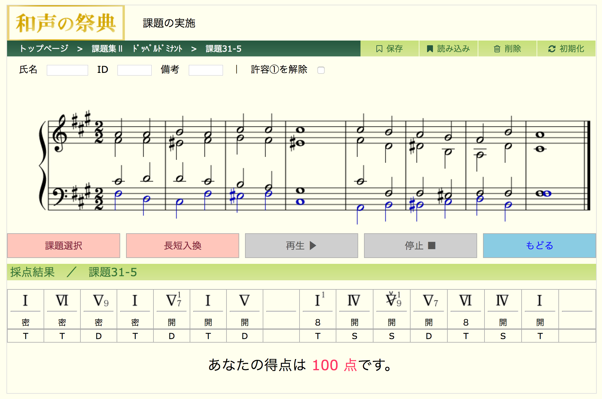

1. 深入研读请参考专业专著
1. 深入研读请参考专业专著
辛苦大家了！到此为止，关于古典和声的专题讲解就告一段落了。走到这一步大家已经接触了相当可观的信息量，但这依然仅仅触及了正统古典和声学最基础的入门门槛。
在专业和声教科书中记载的进阶高阶内容，虽然也包含大家已经熟知的引申音和弦（Tension Chords）等，但关键在于你是否觉得有必要深究“这些在古典音乐风格样式中究竟是如何被精细规范化纳入的”。继续往前走，需要耗费大量时间去钻研那些投入产出比较低、繁琐苛刻的细则，坦白说并不能推荐给所有人。

岛冈 让
音乐之友社

林 达也
Artes Publishing
如果你觉得只要领悟了此前所讲解的“古典音乐的核心基本哲学”就已足够，那么完全没有必要继续穷追猛打。仅仅将本章第Ⅶ章的内容在编配中付诸实践，就足以创作出相当地道正统的古典派风味乐曲了。
在线和声练习平台
学习和声学最困难的地方在于：如果没有专业的导师为你逐个小节批改，你往往很难对自己的声部连接是否合规抱有十足信心。正因如此，传统上一直需要拜师学艺。然而，21世纪的技术进步令人惊叹——居然存在着可以在网页上直接练习和声题目的在线网站！
你可以体验在给定低音声部的前提下配写上方三声部的“低音题”，也可以反过来尝试给定旋律配写下方声部的“高音题（旋律题）”。通过箭头按钮调整各个声部的音高，构筑起优美的线条，实在是非常绝妙的设计！网站支持音频实时回放试听；如果存在声部违规禁则，系统还会清晰明确地指出来。只要耐着性子在此磨砺，你的和声感觉必将得到长足的飞跃。拿到100分时，成就感绝对爆棚！

当你能够用朴素规整的方式稳定拿到100分之后，接下来就可以尝试进一步优化高音声部线条使其尽可能如歌优美，或者挑战稍微跳脱出固有程式、构筑属于你自己的独特配置，这会非常有意思。真是生在了一个好时代啊……
2. 活用禁则的艺术
我们在前面讲了许许多多关于“禁则”的规则，但最希望大家铭记的，绝非死记硬背哪些是禁则，而是去深刻洞察为什么它们会成为禁则。声音的“丰满色彩”与“刚性空洞”、反行与平行所带来的声部融合度或独立性——正是植根于这些底层的美学根基，才孕育出了条条框框的规则。只要你从心底真正理解了它们，在何时应当严谨恪守规则、在何时应当果断打破规则，自然了然于胸。
在流行音乐中的应用
即便对于受过科班正统古典训练的音乐大师而言，只要符合他们心中想要传达的艺术意象，在现代流行音乐中大胆运用“平行五度（连续五度）”的实例也屡见不鲜。
例如这首作品。从1分10秒开始的两小节，当段落切换、配器精简到只剩两声部管乐时，你可以极其清晰地听到令人难以置信的纯粹纯五度平行移动在反复进行。1分27秒处亦是如此。
正是这句旋律乐句。久石让先生出身于顶尖音乐学院（国立音乐大学），更是曾师从经典教材《和声》的作者岛冈让先生，他绝不可能不知道和声学的规矩。然而，他显然敏锐地意识到连续五度所带来的那种纯朴甚至单色调（Monotone）的宁静气质，恰恰是这一乐段最完美的写照，因而欣然为之。和声学原本是让各个声部彼此独立听清的技术；而在此处，他反其道而行之，让两件乐器融为一体，浑然凝聚成一种全新的音色。
在这首乐曲中，还充斥着故意打破“属九和弦配置规则”而让音符以二度碰撞摩擦产生浑浊、或是用纯四度音程配合拨弦来勾勒东方和风韵味等“度数魔法”。这里的连续五度，毫无疑问完全是胸有成竹的刻意选择。
在《Summer》的这一乐段，宛如让人舒了一口长气的音乐驿站。正因为在此处沉淀安宁下来，随后重新切入的主旋律才显得更加璀璨夺目。这恰如在电影或动画中为了营造适度的“留白”与“呼吸空间”，特意插入“蝉鸣伏于树梢的静物画”或“夕阳渐沉的天空空镜”一样的艺术手法。
东方美学讲究“侘寂（Wabi-Sabi）”与含蓄留白。从头到尾一味追求雍容华贵、繁复浓烈，有时反而显得不够高明。久石让先生对禁则之所以成为禁则的深层物理与听觉原因、以及古典派所追求的音响模型，有着坚如磐石的通透理解。**正因为深切懂得禁则究竟为何而设，所以一旦将其打破，能换取到何种前所未有的音响效果，他心中同样明察秋毫。**因此，破除时才敢破得如此淋漓尽致。借此，他成功将平行五度独特的质朴音色，化为了作品中最为神来之笔的绝妙调味。
在近代艺术音乐中的应用
我们在介绍“四度叠置和弦”时提到的德彪西的《沉没的教堂》（La cathédrale engloutie），同样排山倒海般地大量运用了五度与八度的平行进行。

这毋庸置疑同样是“理论上完全严谨合法的杰作”。因为当作曲家渴望摆脱古典派典型的西方音乐框架、引入悠远神秘的东方调式与中古教会韵味时，在这里肆无忌惮地践踏古典禁则，恰恰才是最高水准、最正确的音乐理论活用方式！
此外，拉威尔著名的《波莱罗》（Boléro）中，某一部位完全无视传统和声法则、用异乎寻常的平行叠置来加厚旋律线条的手法同样举世闻名。
打开音乐示例 ↗ 人们普遍认为，这正是试图用多种管弦乐器的精密叠加，来重现管风琴那独特的泛音复合音栓（Mutation Stops）音响的伟大尝试。
由此可见，古典和声学归根结底只是一门“为了让各个声部在保持独立性与平衡感的前提下，构筑起丰满充盈、清澈透明的重奏音响而建立的方法论”。深入领悟其精神内核，在应当使用的场合用最精湛的方法使用，在应当突破的关口以最精准的审美突破，这才是我们耗费心力学习音乐理论的真正意义所在。
3. 真正至关重要之事
最后让我们再次正视：正统“和声学”绝不仅仅是为了制作高规格的古典音乐而存在的孤芳自赏之学。除了钢琴伴奏的编织自不必说，在编写多声部人声和音（Harmony Line）时它能大显身手；哪怕在铁克诺（Techno）或EDM等现代电子音乐中，音轨声部越精简反而越能压榨出震撼的声压（Sound Pressure），因此在用最少的声音元素构筑最具穿透力的声学环境时，和声学知识同样蕴含着难以估量的巨大价值。
如果追问学习和声学最本质的核心究竟是什么，那毫无疑问正是——将心灵从“和弦（Chord）”的概念中彻底解放出来。

上面这段乐句，高音声部与低音声部彼此反向进行、像折扇一样不断向外展开，散发着无比纯正的古典艺术气息。掌握了和声学，构思并创作出这样的乐句绝非难事：你只需要一边审视纵向（各声部间的音程关系）、一边调控横向（各声部的连接与导向），自然编织即可。
然而，如果你试图给这段音乐贴上现代“和弦代号（Chord Names）”，就会变得无比痛苦而繁琐。尤其是第4、第5小节，那种声部连绵起伏的微妙张力根本无法被粗暴的和弦代号所还原。若硬要标注，大概会变成下面这副模样：

极其支离破碎、臃肿凌乱。虽然勉强能做出分析，但如果从一开始就受困于现代和弦理论的思维模式，要在脑海中自发构想并写出这种交织流动、浑然一体的重奏织体，几乎是不可能的。拥有不同的理论系统，直接决定了你拥有截然不同的作曲思维与表达维度。
一旦熟练掌握和声学，像这样极其细腻地掌控声部运动、构筑出游走在危险边缘却又平衡精妙的重奏线条就会变得得心应手。懂得和声，就是深入洞察各个音程音阶所带来的纯粹音响质感，而这本身就等同于直抵音乐的核心本质。
冲破和弦的牢笼
受过理论训练的人，在创作时常常会下意识地思考：“下一个和弦该接什么呢？”由于这实在太过习以为常，几乎没有人会去怀疑它。然而从另一个角度来看，这何尝不是在不知不觉中被囚禁在了一座隐形的理论牢笼之中？我们在无意识间，已经被迫习惯用名为“和弦”的纵向菜刀，把连续流淌的音乐咔嚓咔嚓地剁成了一个个割裂的积木色块。而和声学，能够唤醒你对这一思维盲区的察觉。
当然，在日常的实用性与高效率方面，现代和弦理论无可置疑地超越了古典和声。然而如果思维彻底被和弦理论所锚定，那么这种由每一个独立音符交织叙述的横向故事线条，亦或是我们在第V章中探讨的音块（Tone Clusters）、四度叠置和弦等“难以用常规和弦符号精准描述的先锋音响”，就会在不知不觉中被驱赶到思维的最边缘。有时，和弦这一原本为了方便而发明的高效工具，反而可能成为阻碍我们通向无限创意的绊脚石。
正统和声学如果完全按照教科书死板学习，很多人会觉得教条森严、笨重难用。然而，只要你真正悟透了它的精髓，它反而是一种能够帮你跨越“调性”与“和弦”本身的藩篱、带领你迈向“完全自由”作曲境界的超凡钥匙。
如今被世人视作理所当然的“和弦记号”思维，不过是随着爵士乐与现代流行乐的演进才逐步普及的产物。去了解在那个时代之前人类是如何构思与编织音乐的，定能让你以更加广袤而自由的精神投身于创作之中。探寻和声学真谛的奥秘，正在于此。

第Ⅶ章至此全部修结。虽然这里能介绍的仅仅是和声学冰山一角中的基础，但光是这些，就已经为现代流行音乐的创作注入了取之不尽的养分。和声学若不躬行实践，就永远无法真正化为己有。在今后的编曲创作中，请务必勇敢地将和声技术投入实战吧！